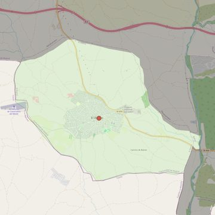

Santiago Apóstol
- Arciprestazgo
- Navalcarnero
- Población
- El Álamo
- Dirección postal
- c/ Toribio Orgaz, 2
- Código postal
- 28607
- Extensión
- 21,99 km² (2.199 ha)
- Teléfono
- 916 081 834
- Correo electrónico
- santiagoapostol-elalamo@diocesisgetafe.es
- Información demográfica
- De la parroquia · De la población (El Álamo) · Del arciprestazgo (Navalcarnero)


Descargar mapaLímites según decreto
Los del término municipal